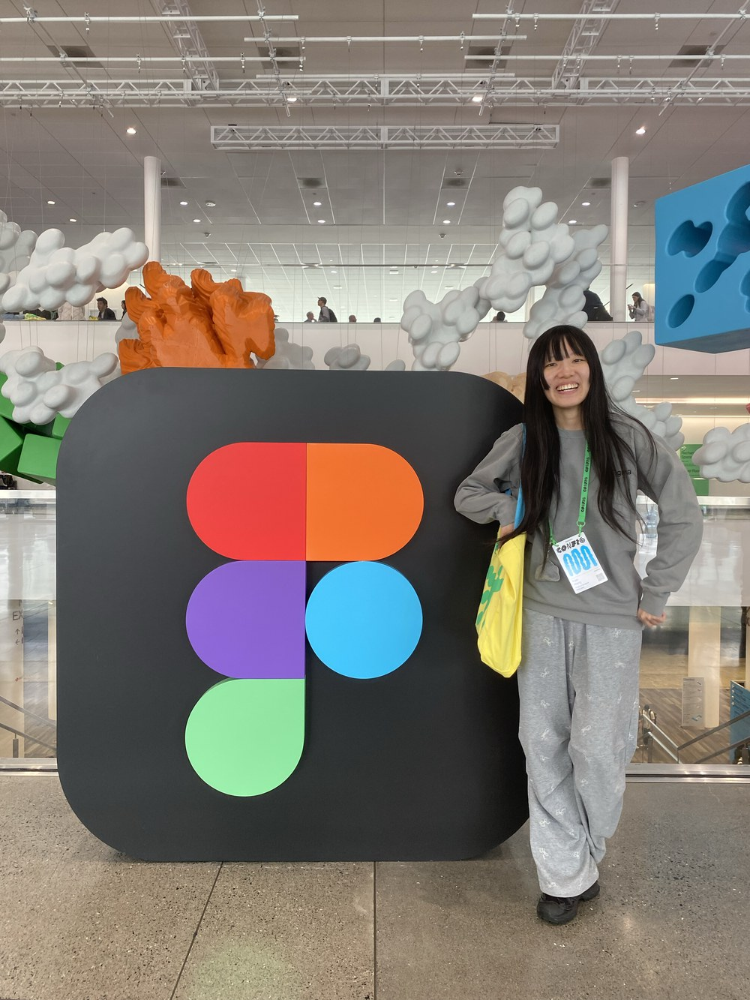
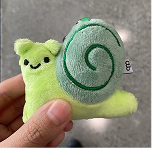
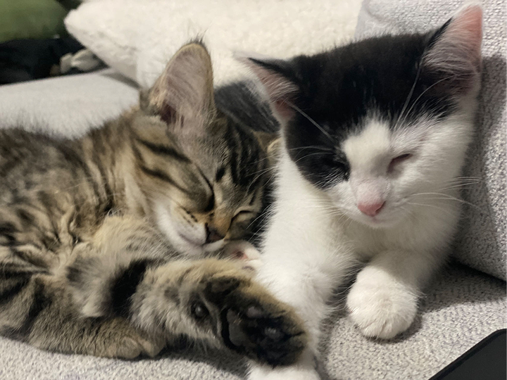
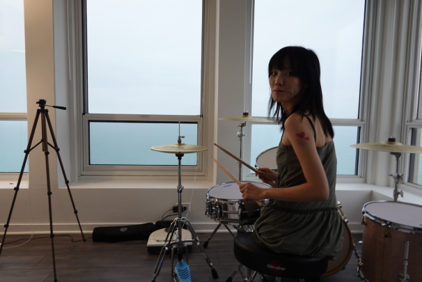

I’m Faye, a product designer working on AI products, tools, and interaction-heavy experiences.
What I like most about design is how many different modes it lets me move between. I can spend one minute talking to people and trying to understand what’s actually going on, then jump into flows, interfaces, prototypes, and all the tiny details that make something finally feel right.
I especially like the part when a problem is still a little fuzzy, and you get to slowly turn it into something clear, useful, and real.
I like getting ideas out of my head and into something I can actually play with.
Sometimes that means making a prototype in Figma. Sometimes I code it, try something in 3D, or make a small interaction experiment just because I want to know what it would feel like.
I also make electronic music from time to time. Different medium, same satisfaction: starting with almost nothing, trying things, adjusting, and eventually ending up with something that feels like it has a life of its own.
I’ve had the chance to work on AI recruiting, creator tools, education, XR, and early-stage products with small teams.
Some of that work has also found its way into places I never really expected — design awards, exhibitions, hackathons, and juries.
Roles, companies and dates go here.
Awards and honours go here.
Shows, talks, hackathons and jury work go here.


A lot of my free time somehow ends up around games, music, visual references, and small details I probably didn’t need to notice.
I save screenshots constantly, get attached to very specific game interactions, and can spend way too long looking at a typeface, a makeup look, a piece of packaging, or some beautifully made object.
I also live with a cat, who contributes very little to rent but appears in a suspicious amount of my camera roll.


Made it this far? Here’s my card.
The card itself goes here.